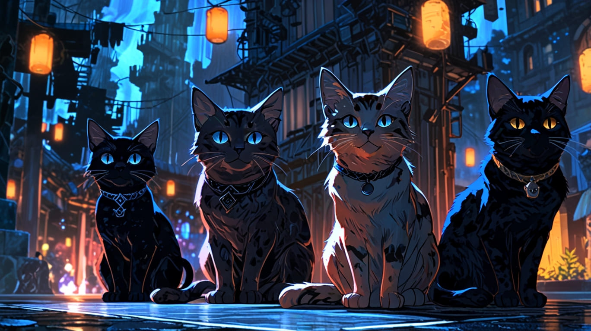

La Compañía de los Gatos: La Búsqueda del Collar Perdido
En un mundo donde los humanos y los gatos coexistían, pero rara vez se entendían, existía un reino mágico llamado Felinoria. Este reino estaba habitado por gatos de todas las razas y colores, cada uno con habilidades únicas. Sin embargo, la paz de Felinoria se vio amenazada cuando el Collar de la Eternidad, un antiguo artefacto que mantenía el equilibrio entre los reinos, fue robado por un oscuro felino llamado Sombra, un gato negro de ojos amarillos que había caído en la oscuridad.
El Consejo de los Ancianos, compuesto por los gatos más sabios del reino, decidió que era hora de actuar. Convocaron a un grupo de valientes gatos aventureros para recuperar el collar y restaurar la paz. Entre ellos se encontraban:
- Miaurol, el Guerrero: Un robusto gato atigrado con un corazón valiente y una espada de juguete que había encontrado en el jardín de su humano.
- Luna, la Hechicera: Una elegante gata siamesa con un don para la magia. Sus ojos azules brillaban con sabiduría.
- Rasguño, el Explorador: Un gato callejero de pelaje gris con habilidades de sigilo y rastreo inigualables.
- Purrcival, el Sabio: Un anciano gato persa con vasto conocimiento sobre la historia de Felinoria.
- Chispa, la Ingeniera: Una gata naranja experta en construir artilugios improvisados.
El grupo se reunió en la Gran Plaza de Felinoria, donde el Consejo de los Ancianos les entregó un mapa antiguo que señalaba la ubicación de la guarida de Sombra, en las Montañas de la Noche. Con el corazón lleno de determinación, los gatos partieron en su aventura.
El viaje no fue fácil. En su camino, se encontraron con el Bosque Susurrante, donde los árboles hablaban y los caminos cambiaban. Luna utilizó su magia para calmar a los árboles y encontrar el camino correcto.
Sin embargo, también tuvieron que enfrentarse a un grupo de ratas malvadas que intentaron robarles el mapa. Miaurol lideró la carga, y con su espada de juguete, ahuyentó a las ratas, ganándose el respeto de sus compañeros.
Después de días de viaje, llegaron a las Montañas de la Noche. La oscuridad envolvía el lugar, y el aire estaba cargado de tensión. Rasguño, con su aguda percepción, detectó la presencia de Sombra y sus secuaces, un grupo de gatos oscuros que habían caído bajo su influencia.
Con astucia, el grupo ideó un plan. Chispa construyó un dispositivo que emitía luces brillantes para desorientar a los gatos oscuros, mientras que Miaurol y Luna se preparaban para el enfrentamiento.
La batalla fue feroz. Los gatos oscuros, liderados por Sombra, atacaron con ferocidad, pero la valentía de Miaurol y la magia de Luna se combinaron para crear una poderosa defensa. Purrcival, desde la retaguardia, ofrecía consejos estratégicos, mientras que Rasguño se movía entre las sombras, desarmando a los enemigos uno por uno.
Finalmente, Sombra se enfrentó a Miaurol en un duelo épico. Con un movimiento ágil, Miaurol logró desarmar a Sombra y, en un momento de compasión, le ofreció una oportunidad de redención. Sombra, sorprendido por la bondad del guerrero, se detuvo. En ese instante, Luna utilizó un hechizo para liberar a Sombra de la oscuridad que lo había consumido. Con lágrimas en los ojos, Sombra se unió a la causa, reconociendo el error de sus caminos.
Juntos, los gatos recuperaron el Collar de la Eternidad, que brillaba con una luz dorada. Con el artefacto en su poder, regresaron a Felinoria, donde fueron recibidos como héroes. El reino celebró su valentía, y la paz fue restaurada una vez más.